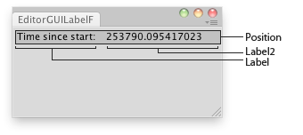

EditorGUI.LabelField
public static void LabelField(Rect position,
GUIContent label,
GUIStyle style = EditorStyles.label);
public static void LabelField(Rect position,
string label,
string label2,
GUIStyle style = EditorStyles.label);
public static void LabelField(Rect position,
GUIContent label,
GUIContent label2,
GUIStyle style = EditorStyles.label);
Parameters
| position | Rectangle on the screen to use for the label field. | |
| label | Label in front of the label field. | |
| label2 | The label to show to the right. | |
| style | Style information (color, etc) for displaying the label. |
Description 描述
Makes a label field. (Useful for showing read-only info.)

Shows a label in an editor window with the seconds since the editor started.
// Shows a label in the editor with the seconds since the editor started
using UnityEditor; using UnityEngine; using System.Collections;
//Select the dependencies of the found GameObject public class EditorGUIObjectField : EditorWindow { [MenuItem("Examples/EditorGUI Label Usage")] static void Init() { UnityEditor.EditorWindow window = GetWindow(typeof(EditorGUIObjectField)); window.Show(); }
void OnGUI() { EditorGUI.LabelField(new Rect(3, 3, position.width, 20), "Time since start: ", EditorApplication.timeSinceStartup.ToString()); this.Repaint(); } }